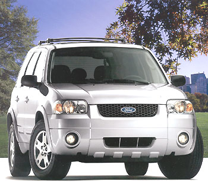
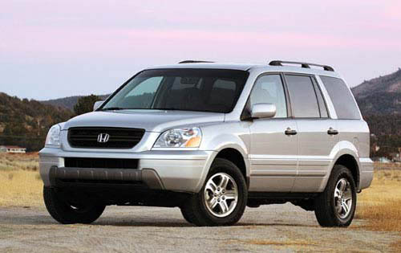

ok so im about to turn 16 and im gonna lease a car which one should i get?
heres the choices, they are all small SUVs
First the Nissan Xterra:

4.0 liter engine, 275 horsepower, have a great torque for a such small vehicle. gas mileage: 21 highway, 17 city. On lease about $300 per month. Best looking car in the list
Second the Nissan Pathfinder:
same engine as the Xterra but a little bit lower, heavier and longer. gas mileage: same as Xterra maybe a little less. On lease about $290 per month. 4000 pound towing capacity (dont really need that)
Third the Ford escape:

3.5 liter 200 hp V6 engine, gas mileage: 24 highway, 19 city. On lease for just above $220 per month. Probably the cheapest and smallest in this group.
Last the Honda Pilot

3.5 liter 250 horsepower V6 engine, gas mileage 23 highway, 19 city. On lease at a cheap price $240 per month. Have the best interior out of all four but looks really dumb on the outside. Also its the safest (lots of airbags)
please tell me wht to get![/img]
 grrr
grrr

 jk jk
jk jk 


")